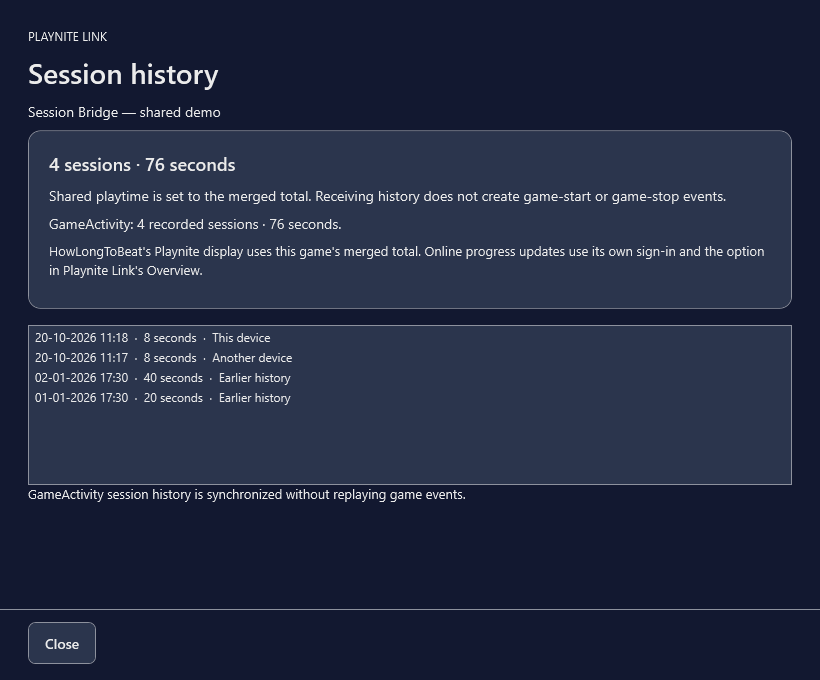

Your own personal cloud
Your progress,
everywhere.
Carry saves and playtime between your Playnite devices. Your storage, your devices, your choices.
Windows 10/11 · Playnite 10.62+ · Free, open source
Playnite is currently holding new plugin submissions. Install the release package for now.
Pick up where you left off
Save history and explicit conflict choices help you keep the version you want. Ordinary launches do not wait for cloud access.
One session, counted once
Merge playtime and GameActivity history across devices. Optional HowLongToBeat updates use existing mapped profile entries.
Your setup, by choice
Opt into extension and theme installation sharing. Active themes, settings and sign-ins stay on each device.
Your combined history
Actual Playnite Link interface with synthetic demo sessions.

No central save service
Connect your own Google Drive, Dropbox, OneDrive or authorized Rclone remote. New Google connections currently require a Desktop OAuth client you own. Read setup requirements.